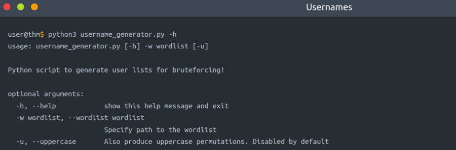
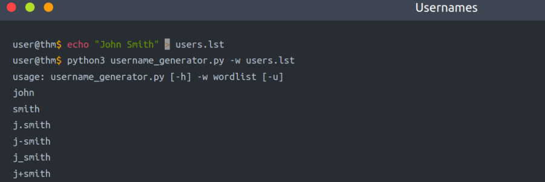
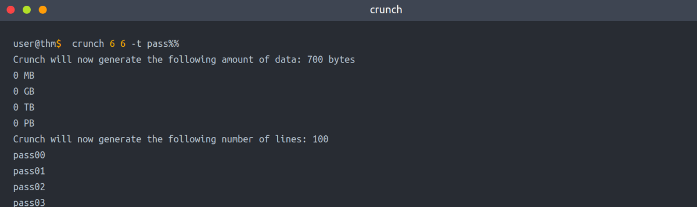
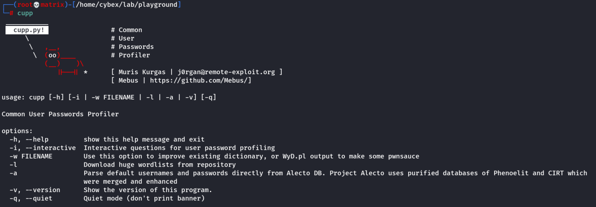
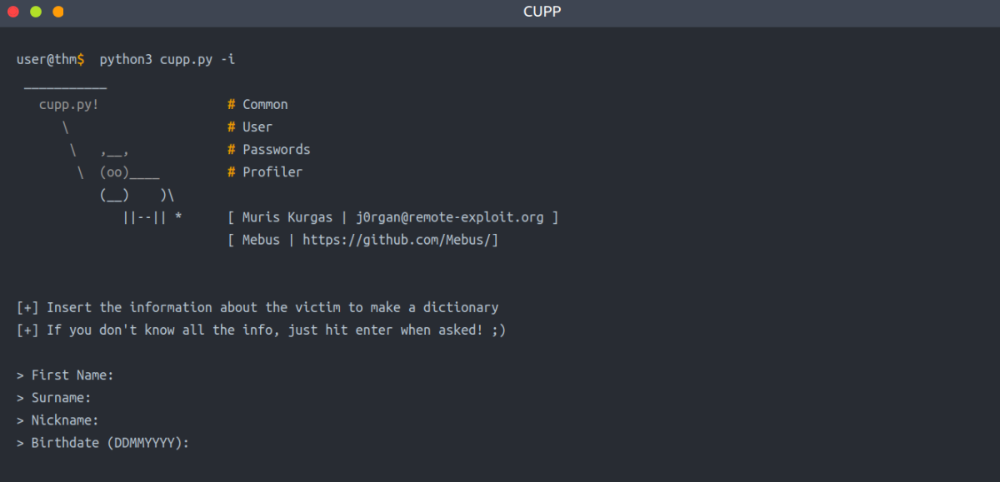
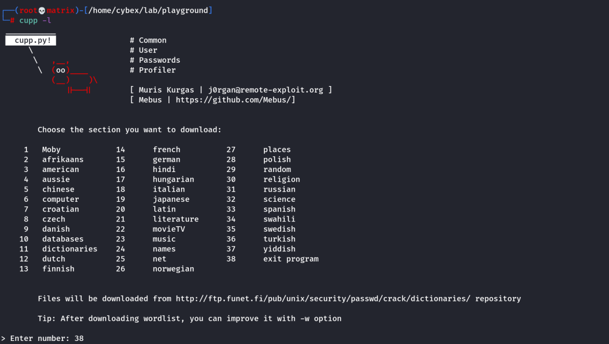
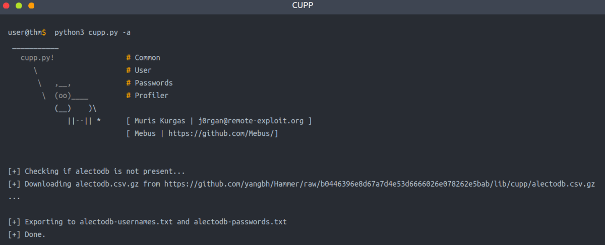

Password Attacks
Default Passwords
Link: https://cirt.net/passwords
Link: https://default-password.info/
Link: https://datarecovery.com/rd/default-passwords/
Weak Passwords
Link: https://wiki.skullsecurity.org/index.php?title=Passwords
Link: https://github.com/danielmiessler/SecLists/tree/master/Passwords
Leaked Passwords
Link: https://github.com/danielmiessler/SecLists/tree/master/Passwords/Leaked-Databases
Combined wordlists
We will use cat to combine multiple password lists.
cat file1 file2 file3 > combined_list
Now to remove duplicate we wiill use sort & uniq
sort combined_list | uniq -u > cleaned_combined_list
Customized Wordlists
Tools such as Cewl can be used to effectively crawl a website and extract strings or keywords. Cewl is a powerful tool to generate a wordlist specific to a given company or target. Consider the following example below:
cewl -w list.txt -d 5 -m 5 http://thm.labs
-w will write the contents to a file. In this case, list.txt.
-m 5 gathers strings (words) that are 5 characters or more
-d 5 is the depth level of web crawling/spidering (default 2)
http://thm.labs is the URL that will be used
As a result, we should now have a decently sized wordlist based on relevant words for the specific enterprise, like names, locations, and a lot of their business lingo. Similarly, the wordlist that was created could be used to fuzz for usernames.
Username Wordlists
Gathering employees' names in the enumeration stage is essential. We can generate username lists from the target's website. For the following example, we'll assume we have a {first name} {last name} (ex: John Smith) and a method of generating usernames.
Link: https://github.com/therodri2/username_generator.git


Keyspace Technique (crunch)
Another way of preparing a wordlist is by using the key-space technique. In this technique, we specify a range of characters, numbers, and symbols in our wordlist. crunch is one of many powerful tools for creating an offline wordlist. With crunch, we can specify numerous options, including min, max, and options as follows:
The following example creates a wordlist containing all possible combinations of 2 characters, including 0-4 and a-d. We can use the -o argument and specify a file to save the output to.
crunch 2 2 01234abcd -o crunch.txt
Format: crunch minimum maximum letters options
CAUTION
It's worth noting that crunch can generate a very large text file depending on the word length and combination options you specify. The following command creates a list with an 8 character minimum and maximum length containing numbers 0-9, a-f lowercase letters, and A-F uppercase letters:
crunch 8 8 0123456789abcdefABCDEF -o crunch.txt
The file generated is 459 GB and contains 54875873536 words. So its not feasible.
SPECIAL CHARACTERS
crunch also lets us specify a character set using the -t option to combine words of our choice. Here are some of the other options that could be used to help create different combinations of your choice:
@ - lower case alphabetic characters
, - upper case alphabetic characters
% - numeric characters
^ - special characters including space
For example, if part of the password is known to us, and we know it starts with pass and follows two numbers, we can use the % symbol from above to match the numbers. Here we generate a wordlist that contains pass followed by 2 numbers:
crunch 6 6 -t pass%%

CUPP - Common User Passwords Profiler
CUPP is an automatic and interactive tool written in Python for creating custom wordlists. For instance, if you know some details about a specific target, such as their birthdate, pet name, company name, etc., this could be a helpful tool to generate passwords based on this known information. CUPP will take the information supplied and generate a custom wordlist based on what's provided. There's also support for a 1337/leet mode, which substitutes the letters a, i,e, t, o, s, g, z with numbers. For example, replace a with 4 or i with 1. For more information about the tool, please visit the GitHub repo here.
Link: https://github.com/Mebus/cupp

CUPP supports an interactive mode where it asks questions about the target and based on the provided answers, it creates a custom wordlist. If you don't have an answer for the given field, then skip it by pressing the Enter key.
cupp -i

As a result, a custom wordlist that contains various numbers of words based on your entries is generated. Pre-created wordlists can be downloaded to your machine as follows:
cupp -l

Based on your interest, you can choose the wordlist from the list above to aid in generating wordlists for brute-forcing!
Finally, CUPP could also provide default usernames and passwords from the Alecto database by using the -a option.
cupp -a
